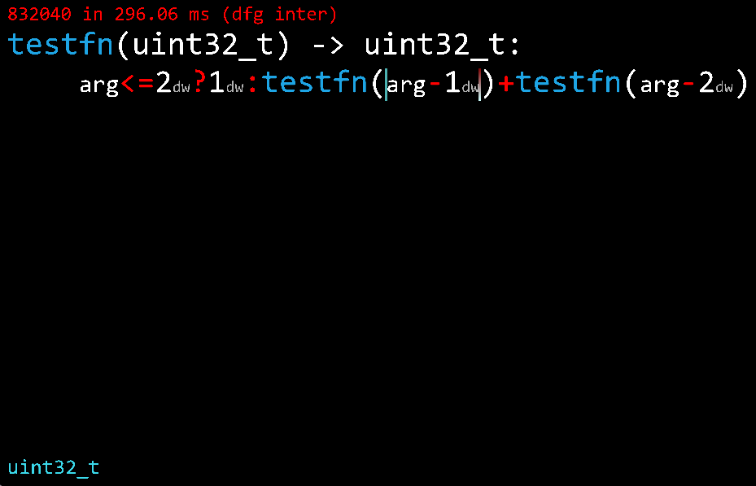
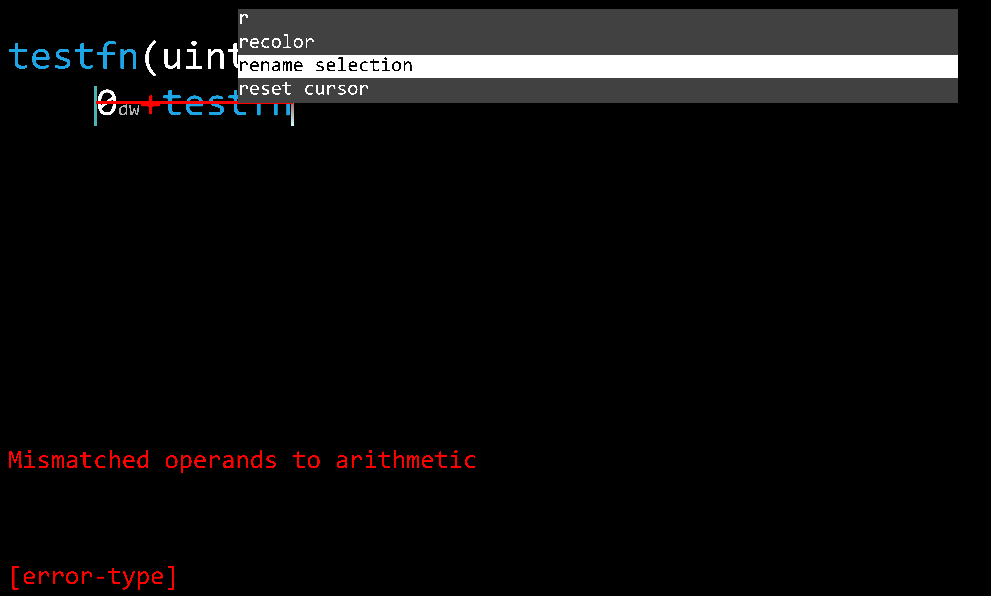

BCC is a structurally-edited language designed to allow developers to write code and collaborate on projects more effectively. All code is stored in a binary format, making it easily machine-readable.
Work-in-progress editor screenshots

